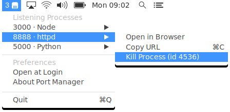

Port Manager
The fastest way to manage ports on your Mac
Find, open and kill processes listening on TCP ports, in just a couple of clicks.
Get Port Manager for macOS
Works with macOS Sierra (10.12 ) and above.
View all of your listening processes with a glance at your menu bar.
Quickly open your running projects in your browser.
Share projects using your local network IP address.
Free up ports in a couple of clicks.
If you’re a web developer, this story will sound all too familiar.
üë©‚Äçüíª
You fire up a project in terminal and are interrupted by an obnoxious EADDRINUSE message.
üí≠
"How do I kill a process on mac?"
Frustrated, you do some Googling and find a series of commands on StackOverflow that you can use.
üí•
You fumble around in terminal with some unfamiliar commands you found until you manage to kill the process.
ü§§
Guess what! It happens again and you’ve forgotten everything so you repeat the steps above.
We’ve been there. It’s mildly irritating.
Well, no more! Freeing up a port is now as simple as:

Get Port Manager for macOS
Works with macOS Sierra (10.12 ) and above.